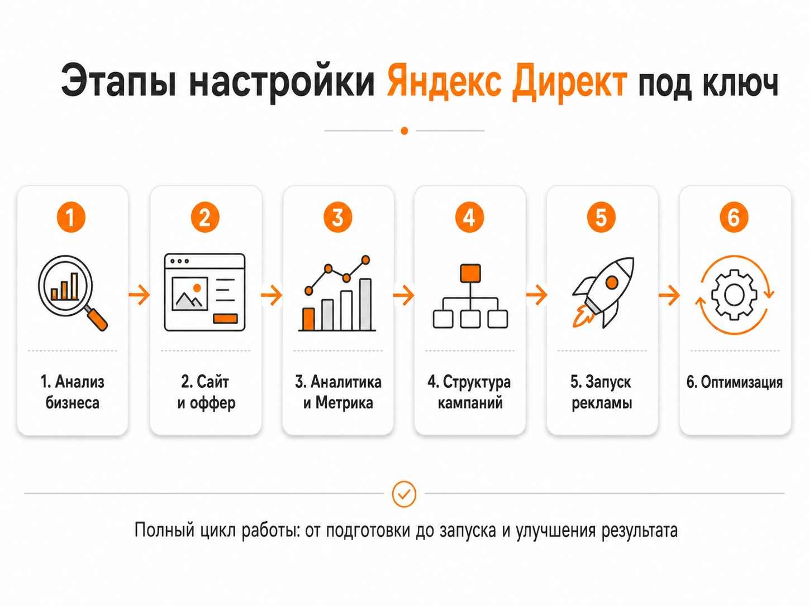
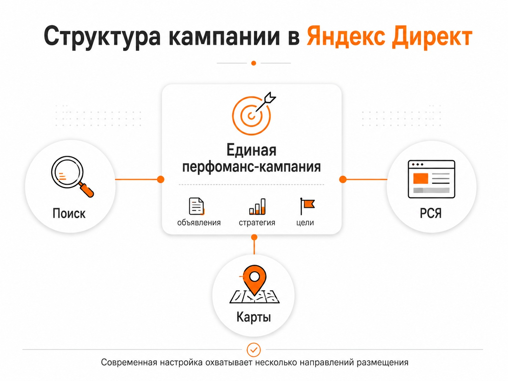

Блог о платном трафике
Настройка Яндекс Директ под ключ: что входит в услугу
Настройка Яндекс Директ под ключ - это полный запуск рекламы от анализа бизнеса и подготовки аналитики до создания кампаний, объявлений и начала показов. Заказчику не нужно самостоятельно разбираться в структуре Директа, собирать запросы, выбирать стратегии или настраивать цели в Метрике.
Но я бы не воспринимал формулировку «под ключ» как «один раз настроили рекламу и больше к ней не прикасаемся». Даже хорошо подготовленную кампанию после запуска нужно проверять по реальной статистике: какие запросы и аудитории приводят обращения, где расходуется бюджет, какие объявления работают лучше и что происходит с ценой заявки.
Что значит настройка Яндекс Директ под ключ
В нормальном варианте специалист берет на себя весь цикл подготовки и запуска рекламы:
- Разбирается в продукте и задаче бизнеса.
- Анализирует сайт и рекламное предложение.
- Проверяет или настраивает аналитику.
- Определяет структуру рекламных кампаний.
- Подбирает аудитории и поисковые запросы.
- Создает объявления и рекламные материалы.
- Настраивает стратегии, бюджет и ограничения.
- Проверяет кампании перед запуском.
- Запускает рекламу и анализирует первые данные.
То есть работа начинается не с кнопки «Создать кампанию». Сначала нужно понять, что рекламировать, кому, куда вести человека после клика и какое действие считать результатом.
Именно так я строю работу со своими проектами: отдельно разбираю бизнес, оффер, посадочную страницу, аналитику и возможные точки потери бюджета, а уже после этого перехожу к структуре и запуску кампаний.

Что входит в настройку Яндекс Директ под ключ
Анализ бизнеса и рекламной задачи
Сначала нужно определить, что именно должна приносить реклама. Для одного проекта основная цель - заявка с сайта, для другого - звонок, заказ в интернет-магазине, регистрация или другое целевое действие.
На этом этапе я смотрю:
- какие товары или услуги нужно продвигать;
- кто их покупает;
- какие направления приоритетны;
- в каких регионах работает компания;
- какая экономика у продукта;
- есть ли сезонность;
- какие рекламные кампании запускались раньше;
- какие ограничения есть по бюджету.
Без этого можно технически правильно заполнить рекламный кабинет, но получить слабый результат для бизнеса.
Анализ сайта и оффера
Реклама приводит человека на сайт, но не может заставить его оставить заявку на странице, которая плохо отвечает на его запрос.
Перед запуском я проверяю посадочную страницу: первый экран, предложение, цены, преимущества, формы, мобильную версию, понятность следующего действия.
Иногда проблему выгоднее исправить на сайте до масштабирования рекламы, чем пытаться компенсировать низкую конверсию увеличением бюджета. Подробнее - в статье о лендинге для Яндекс Директа.
Настройка Яндекс Метрики и целей
До начала полноценного продвижения нужно определить, какие действия пользователей будут передаваться в аналитику.
Это могут быть:
- отправка формы;
- звонок;
- оформление заказа;
- добавление товара в корзину;
- регистрация;
- переход в мессенджер;
- другие значимые действия.
Цели нужны не только для отчетов. Автоматические стратегии Яндекс Директа могут использовать данные Метрики для оптимизации показов под нужные действия пользователей.
Если реклама запущена без корректной аналитики, после расходования бюджета сложно понять, какие источники действительно принесли результат. О том, как считать этот результат, читайте в статье о конверсии в Яндекс Директ.
Выбор структуры рекламных кампаний
Сейчас настройка Яндекс Директа сильно отличается от подхода, при котором специалист создавал сотни почти одинаковых кампаний и вручную управлял каждой ключевой фразой.
Один из основных инструментов Директа сегодня - Единая перфоманс-кампания. В ней можно управлять размещением на Поиске, в РСЯ, Картах и других доступных площадках. Настройки разделены по уровням кампании, группы и объявлений.
Количество кампаний само по себе ничего не говорит о качестве настройки. Структура должна помогать управлять рекламой, получать достаточно статистики и отдельно контролировать направления, у которых действительно отличаются цели, аудитории или экономика.

Настройка поиска
Для рекламы на поиске определяются коммерческие запросы и другие подходящие условия показа.
Проверяются:
- формулировки, которыми пользуется целевая аудитория;
- соответствие запросов конкретным услугам и страницам сайта;
- минус-фразы;
- география;
- расписание;
- стратегия;
- ограничения бюджета.
После запуска поисковые запросы продолжают анализироваться. Даже хорошая первоначальная семантика не отменяет работу с реальной статистикой. Для исключения нецелевого спроса пригодится статья о минус-фразах в Яндекс Директе.
Настройка РСЯ и аудиторий
В Рекламной сети Яндекса логика отличается от поиска. Здесь пользователь не обязательно прямо сейчас вводит запрос на покупку. Система может находить подходящую аудиторию по множеству сигналов.
Поэтому механически переносить поисковую структуру в РСЯ не нужно.
Для сетевой рекламы особенно важны:
- сегментация аудитории;
- рекламное предложение;
- изображения и видео;
- качество площадок;
- корректная передача конверсий;
- накопление статистики для алгоритмов.
Подробнее - в статье что такое РСЯ в Яндекс Директ.
Подготовка объявлений
Объявление должно объяснить человеку, что предлагается и почему ему имеет смысл перейти на сайт.
В 2026 году Яндекс активно переводит рекламу в ЕПК на комбинаторные объявления. В них можно передавать несколько заголовков, текстов, изображений и видео, а система формирует из этих элементов разные комбинации. С июля началось обновление существующих текстово-графических объявлений до нового формата.
Поэтому современная настройка Директа - это уже не только написание одного заголовка под каждую ключевую фразу. Нужно подготовить набор сильных рекламных элементов, из которых система сможет выбирать подходящие комбинации.
Выбор стратегии
Стратегия зависит от количества данных, цели рекламы, бюджета и особенностей конкретного проекта.
В Директе доступны автоматические стратегии, ориентированные на конверсии или клики, а для поисковых кампаний остается возможность работы с ручными ставками.
Если есть достаточное количество качественных конверсий, обычно логичнее давать алгоритмам возможность оптимизироваться именно под них. Если данных мало, может потребоваться другой подход на этапе запуска и накопления статистики. Подробности - в статье как выбрать стратегию в Яндекс Директ.
Какие рекламные кампании входят в работу под ключ
Универсального набора вроде «обязательно Поиск + РСЯ + ретаргетинг» нет.
Набор инструментов зависит от бизнеса.
Для услуг это могут быть поисковые кампании, РСЯ и работа с пользователями, которые уже посещали сайт. Для интернет-магазина дополнительно используются товарные форматы и фиды. Для локального бизнеса могут быть полезны показы в Картах.
Я не считаю правильным запускать все доступные форматы только потому, что они существуют. Каждый рекламный инструмент должен решать конкретную задачу.
Чем настройка под ключ отличается от ведения
Настройка - это подготовка и запуск рекламной системы.
Ведение начинается после запуска, когда появляется реальная статистика.
Во время дальнейшей работы анализируются:
- стоимость обращения;
- количество и качество конверсий;
- поисковые запросы;
- аудитории;
- площадки РСЯ;
- объявления;
- расход бюджета;
- эффективность отдельных направлений;
- изменения на сайте и в воронке.
Именно на этом этапе становится понятно, какие первоначальные гипотезы подтвердились.
Поэтому для бизнеса обычно важнее не сам факт запуска кампаний, а то, кто и как будет работать с ними дальше.
Что потребуется от заказчика
Формат «под ключ» не означает, что специалисту вообще не понадобится информация от бизнеса.
Для нормального запуска обычно нужны:
- доступ к рекламному кабинету;
- доступ к Яндекс Метрике;
- информация об услугах или товарах;
- приоритетные направления;
- регионы работы;
- данные о ценах и ограничениях;
- информация о предыдущей рекламе, если она была;
- обратная связь по качеству заявок.
Последний пункт особенно важен. Рекламный кабинет показывает конверсии, но без данных от отдела продаж не всегда можно определить, какие обращения превращаются в реальные сделки.
Как понять, что Яндекс Директ настроен качественно
Я бы не оценивал работу по количеству ключевых слов или кампаний.
После настройки должно быть понятно:
- какие направления рекламируются;
- куда направляется трафик;
- какие цели используются;
- что считается конверсией;
- где показывается реклама;
- какая стратегия выбрана и почему;
- как ограничивается бюджет;
- какие показатели будут контролироваться после запуска.
Хороший специалист также должен иметь возможность объяснить структуру рекламного кабинета нормальным языком, а не сводить результат работы к фразе «кампании настроены».
Сколько стоит настройка Яндекс Директ под ключ
Цена зависит от объема проекта.
Настройка одного направления услуг в одном регионе и запуск интернет-магазина с большим каталогом - это разный объем работы. На стоимость также влияют количество направлений, география, состояние аналитики, необходимость работы с сайтом, количество рекламных форматов и дальнейшее сопровождение.
Поэтому сравнивать предложения только по цене настройки не совсем корректно. Лучше смотреть, какой объем работы входит в услугу и что будет происходить после запуска.
Можно ли один раз настроить Директ и больше его не вести
Технически реклама может продолжать работать и без постоянных изменений. Но рассчитывать, что первоначальная настройка останется оптимальной месяцами, я бы не стал.
Меняются конкуренты, спрос, ставки, объявления, поведение пользователей и сам Яндекс Директ. Главное - после запуска появляется новая статистика, которой до запуска просто не существовало.
Поэтому настройка под ключ должна создавать хорошую стартовую систему, а не обещать вечную кампанию, которую больше никогда не придется анализировать.
Что в итоге получает бизнес
Результат настройки Яндекс Директ под ключ - не определенное количество объявлений или собранных ключевых слов.
Бизнес должен получить работающую рекламную систему:
- с настроенной аналитикой;
- понятными целями;
- логичной структурой кампаний;
- подготовленными объявлениями;
- контролируемым бюджетом;
- возможностью оценивать заявки и другие целевые действия;
- базой для дальнейшей оптимизации.
На своей стороне я рассматриваю Яндекс Директ именно как часть системы привлечения клиентов: реклама, посадочная страница, аналитика и дальнейшая работа со статистикой должны быть связаны между собой.
Подробнее о работе с рекламой, посадочными страницами и кейсами